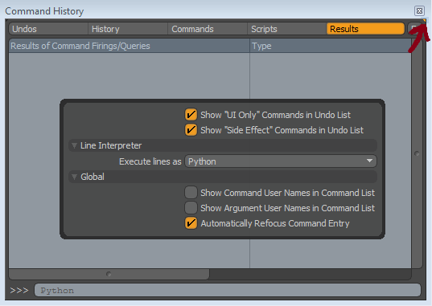

Starting Out¶
First Steps in the API¶
The Python API is significantly more powerful than the previous Python scripting interface. This means Python users can create fully functional plugins just like C++ users, but it also means Python scripters who want to take advantage of the speed and power need to interact with modo at a more fundamental level. There is a lot exposed at this level, and it can be overwhelming for new users. Hopefully, this brief introduction can get newer users started off on the right foot.
The heart of the Python API is the lx module. The API also has a lxu module that contains helpful user classes. These are basically shortcuts to do certain things in the lx module, however since there aren’t user classes for everything and this is just an introduction to exploring the API, we’ll focus on the lx module. Looking at the different elements in the lx module is probably the best way to get familiar with the Python API, and the persistent interpreter will let you do this through [http://en.wikipedia.org/wiki/Type_introspection/ Introspection]. First let’s open an interpreter. You can open the command history with the F5 key and change it to use the python interpreter through the viewport settings. The results tab will show you modo’s responses to your inputs so you’ll want to switch over to it.
To introspect the lx module, you can simply enter dir(lx) into the interpreter. You’ll find the contents of the lx module listed in the results of the command history. There’s only 3 sections of this that you may want to start to look at: lx.object, lx.service, and lx.symbol.